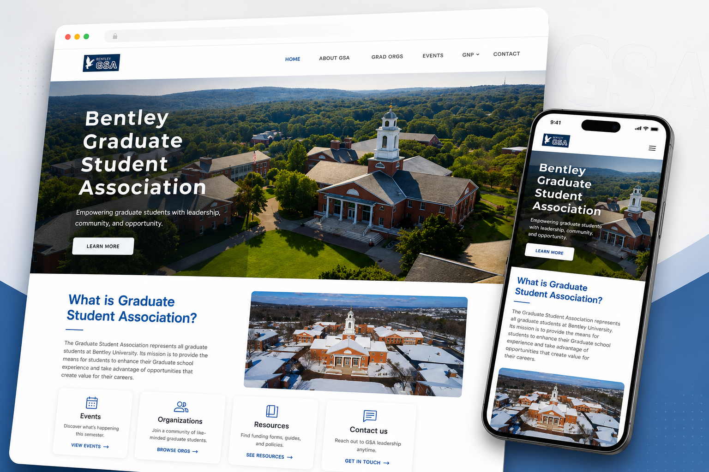

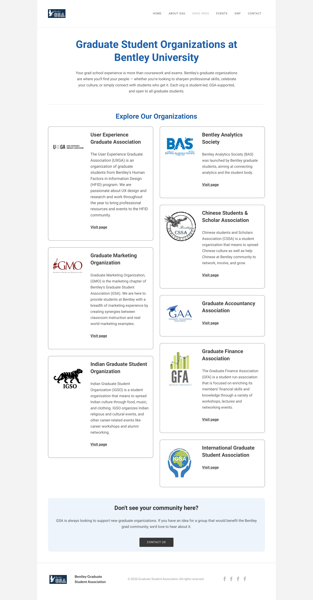
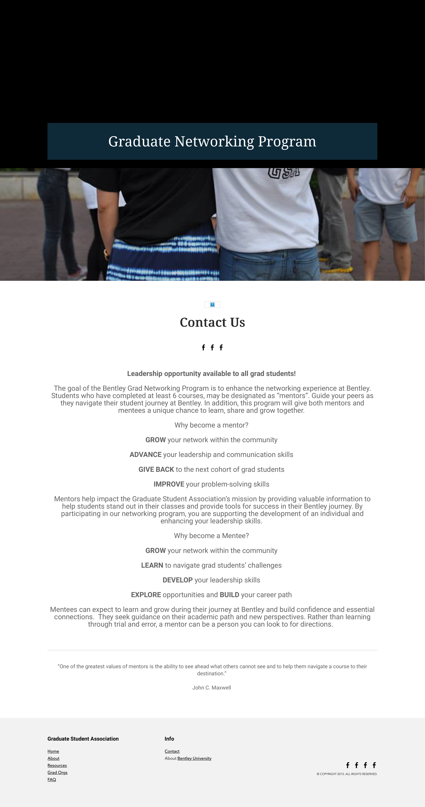
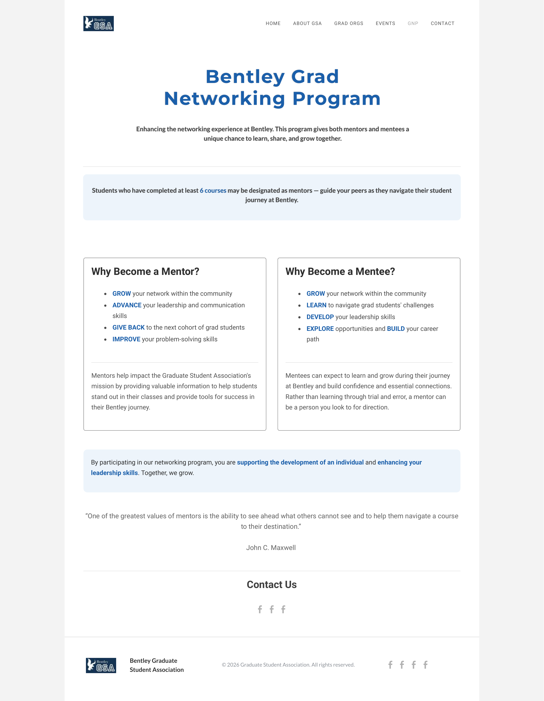
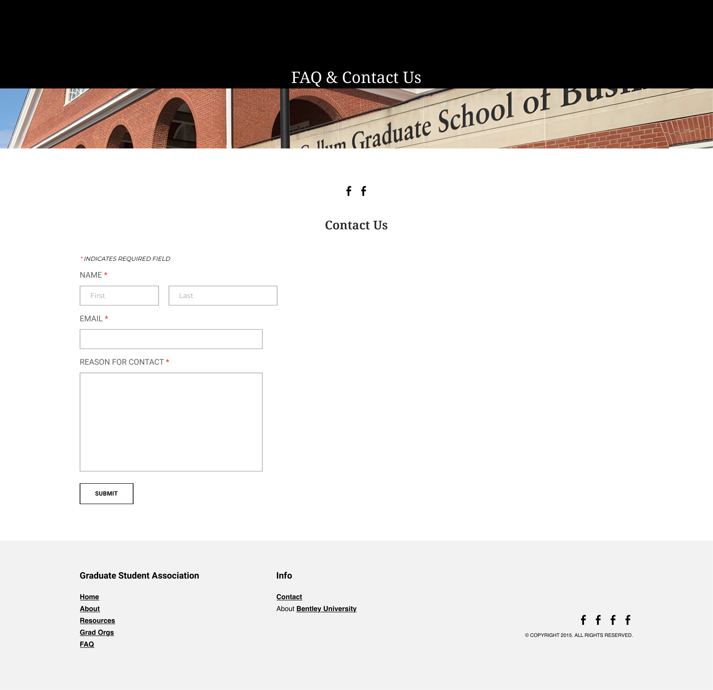
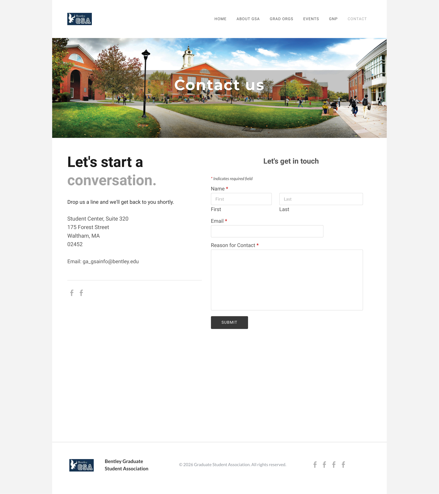

case study — web redesign & information architecture
Bentley GSA website redesign
Bringing a neglected student-government website back into service by rebuilding its navigation, content hierarchy, and page structure around what graduate students actually come to it to do.

my role
- VP of Technology, Bentley GSA
- Led the redesign end to end
- Parent body for 12 grad organizations
scope
- Sole designer and developer
- Five core pages
- Audit, diagnose, rebuild
platform
- Weebly, a low-code builder
- Designed within fixed components
- No specialized tooling required
overview
A front door that had fallen out of date
The Graduate Student Association represents every graduate student at Bentley University and is the parent body for twelve graduate organizations. Its website is the front door to events, organizations, mentorship, and leadership contact. When I took on the VP of Technology role, that front door had quietly fallen out of date and out of sync with the organization it was meant to serve.
I led the redesign end to end: auditing the existing site, diagnosing its structural problems, and rebuilding five core pages within the constraints of the platform and a single-person team. The site runs on Weebly, so the work was as much about designing within fixed limits as it was about design itself — achieving a consistent navigation system, a uniform card layout, and a coherent content hierarchy using the components the platform allowed, rather than building freely from scratch.
The work leaned on my own perspective as a graduate student in the organization and on a structured review of the old site against basic usability and information-architecture principles, rather than a large formal research program. This case study reconstructs that work using archived snapshots of the previous site alongside the current live pages.
the problem
Not broken — neglected
The old site was not broken in any single dramatic way. It was suffering from accumulated neglect, and the symptoms compounded each other. The clearest signal was the footer copyright: it still read 2015. The site had drifted for years without a coherent owner, and that showed up in three recurring failures.
the symptoms
- 1The navigation did not agree with itself — header and footer menus listed different pages, and several items pointed nowhere consistent.
- 2Pages were mislabeled — more than one page announced itself as something it was not, so the first orienting cue was often wrong.
- 3Layout space went unused — single columns of content sat beside large empty areas, leaving the most valuable screen real estate doing no work.
my goal
- 1Consistent navigation, identical in the header and footer of every page.
- 2Honest labels, so each page tells the truth about what it is.
- 3Layouts where structure matches the content's actual purpose — not a cosmetic refresh.
the spine of the work
One navigation model, applied everywhere
The single most important fix was also the least glamorous. On the old site, the header navigation read one way and the footer read another. The header surfaced items like a Grad Life PDF and reshuffled Events and GNP; the footer listed Resources and FAQ that the header never showed. Orphan links appeared in one place and vanished in another. There was no canonical answer to a basic question: what pages does this site have?
I established a single navigation model and applied it identically in the header and footer of every page:
This is the structural decision the rest of the redesign hangs from. The mismatched footers and mislabeled pages were not separate cosmetic issues — they were symptoms of the same underlying problem: no one had defined the site as a single system. Naming that system, and enforcing it consistently, is what turned a set of drifting pages back into a website.
the redesign
Page by page
Each page carried a distinct problem, so each one demonstrates a different part of the work. Tap any screen to view it full size.
home
From greeting to wayfinding
The old homepage greeted visitors with "Welcome to Graduate School!" and then offered exactly two ways forward: two image tiles labeled Our Events and Grad Orgs. The most valuable area of the site said nothing about what the GSA is or does, and surfaced only a fraction of what a student might be looking for.
I rebuilt the page around the tasks people arrive to complete. The hero now leads with the organization's name, a one-line statement of what it does, and a clear call to action. Below it, four labeled entry points — Events, Organizations, Resources, Contact — each pair an icon with a short description and a dedicated button. The homepage went from a static welcome to a wayfinding layer: a visitor can see the site's primary paths at a glance and choose one, instead of guessing from two unlabeled pictures.


about
From roster to community
The old About page presented the leadership team as a committee roster: names and titles grouped by function, with sparse and inconsistent imagery. It documented who was in charge without conveying anything about the community a prospective member would be joining.
The redesigned page treats the team as the organization's most human asset. Every member now appears in a consistent card with a professional photo, their role, and a short personal note — a hobby, a fact, something disarming. This was a deliberate content decision, not a styling one: the About page's real job is to make a "vibrant community" feel worth joining, and a uniform, photo-led card grid with a touch of personality does that in a way a text roster cannot. The redesign also let the page focus — contact details that once lived at the bottom of About now have a single canonical home on the Contact page.


grad orgs
From list to navigable index
The directory of graduate organizations was a long single-column list — each org a left-aligned block of text with its logo floated to the side, stacked one after another, with no clear way to act on any of them.
I converted the list into a two-column card grid. Each organization is now a self-contained unit — logo, name, description, and an explicit "Visit page" link — which makes a directory of roughly eight items scannable and turns a static description into a navigable index. I also added a closing "Don't see your community here?" section that invites students to propose a new organization and routes them to Contact, supporting the GSA's goal of growing the roster. While restructuring the content I caught a real error too: the old Graduate Accountancy Association entry was carrying copy pasted from the Chinese Students and Scholars Association, so it described the wrong organization entirely. The redesign corrected it.


gnp — graduate networking program
From one column to a clear choice
The Graduate Networking Program page had the most direct labeling problem on the site. Its hero banner read "Graduate Networking Program," but the heading immediately below it read "Contact Us" — even though the entire page was about mentorship. The first thing a visitor read pointed them at the wrong thing.
I corrected the label and rebuilt the structure around the decision the page is actually asking the visitor to make. The mentor and mentee paths are parallel choices, so I placed them in two side-by-side cards — "Why Become a Mentor?" and "Why Become a Mentee?" — instead of stacking everything in one centered column. Key facts, like the six-course eligibility requirement, were pulled into callout boxes so they surface instead of hiding inside paragraphs. The content itself was largely sound; the work here was making the page's structure match the structure of the choice it presents, and making its heading tell the truth.


contact
From a form in a void to a real point of contact
The old Contact page was a form floating in empty space. It collected a name, email, and reason for contact, but the entire right half of the page was blank — no address, no email, no sense of who was on the other end. A contact page that does not show you how to reach the organization is failing at its one task.
The redesigned page pairs the form with the information that makes it usable: the physical address, the email, and a short, warm "Let's start a conversation" introduction. A two-column layout puts contact details on the left and the form on the right, filling the space that was previously wasted and giving the visitor a complete picture. This is also where the new unified navigation is most visibly an improvement, since the old Contact page carried one of the most inconsistent menus on the site.


what I'd do next
Closing the loop
This redesign fixed the structural and content problems I could diagnose from the site itself. The honest next step is to close the loop with the people who use it.
01
Validate with graduate students
Light usability checks with a handful of students would confirm whether the new navigation and labels match how they actually look for things.
02
Add the Events page
Events is the one core page I have not yet rebuilt. Bringing it into the same navigation and layout system would complete the set.
03
Establish maintenance
The deepest problem was that no one owned the site — that's how it ends up reading 2015 in 2026. The work leaves behind a consistent system, built in standard Weebly components, that the next VP of Technology can keep current.
what this project shows
Coherence over cosmetics
I am drawn to the structural layer of design: how a site is organized, whether its labels are honest, and whether each page does the job it claims to do. This redesign was less about making the GSA site look new and more about making it coherent. I treated the site as a single system, found where it contradicted itself, and rebuilt it so that its navigation, its labels, and its layouts all tell the visitor the same true story.